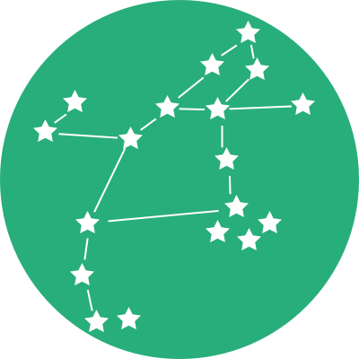
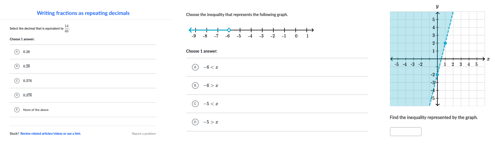

Perseus
Perseus



Perseus Exercise Renderer
Perseus is Khan Academy's exercise system. This repo contains the code needed to take a problem in the Perseus format and present it, allow interaction, and grade the result of a learner's work.

Development
Perseus is a monorepo - a single repository that ships multiple npm packages. Generally you can treat Perseus as a single code base; things should generally just work as you expect them to during the development process. We use scripts and a tool called changesets to keep package inter-dependencies organized, release the one repo to multiple npm packages, and version changes appropriately.
For a slightly more detailed overview, see the "Shipping a Change to Perseus" document in Confluence.
Prerequisites
Getting started
ka-clone git@github.com:Khan/perseus
pnpm install
Branching strategy
Our shared development branch is main. main should always be releasable. Don't land changes to main that you're not ready to ship!
To make changes to Perseus, create a new branch based on main, commit your changes, and open a pull request on GitHub.
Everyday commands
pnpm tsc -w # run the typechecker in watch mode
pnpm test # run all tests
pnpm lint # find problems
pnpm lint --fix # fix problems
pnpm storybook # open component gallery
pnpm changeset # create a changeset file (see below)
pnpm update-catalog-hashes # update catalog dependency hashes (see below)
Additionally, we use Khan Academy's Git extensions (OLC) to manage pull requests.
git pr # open a pull request for the current branch
git land # land the pull request for the current branch
Using Storybook
The components and widgets of Perseus are developed using Storybook. After you clone the project and get dependencies installed, the next step is to start storybook by running pnpm storybook. This will start a server and give you a playground to use each component.
Using Changesets
We use changesets to help manage our versioning/releases. Each pull request must include a changeset file stating which packages changed and how their versions should be incremented. Run pnpm changeset to generate and commit a changeset file.
Catalog Hashes
Catalog hashes ensure packages are republished when their catalog dependencies (Wonder Blocks, React, etc.) are updated. When a catalog dependency version changes, the hash changes, signaling that affected packages should be version-bumped and republished even if their source code hasn't changed. These hashes are automatically updated when running utils/sync-dependencies.ts. If you manually add catalog dependencies to a package.json, run pnpm update-catalog-hashes to update the hashes. The pre-publish check will verify all hashes are current before releasing.
Releasing Perseus to npm
- Landing changes to
maincreates/updates a “Version Packages” PR - To cut a Perseus release, approve and land the “Version Packages” PR
(typically with
git land) - ☢️ If the CI/CD checks aren’t running, you might need to close and reopen the PR
- After the release script runs, you should see the new releases on the release page
Random notes
- We use
v8to track Jest coverage. There's some old legacy code that we don't want coverage for, so we ignore that withc8 ignore. It might look likec8isn't be used, but it's used by thev8coverageProvider(defined in config/test/test.config.js).
Contributing
The Perseus project is not accepting external contributions. We’re releasing the code for others to refer to and learn from, but we are not open to pull requests or issues at this time.